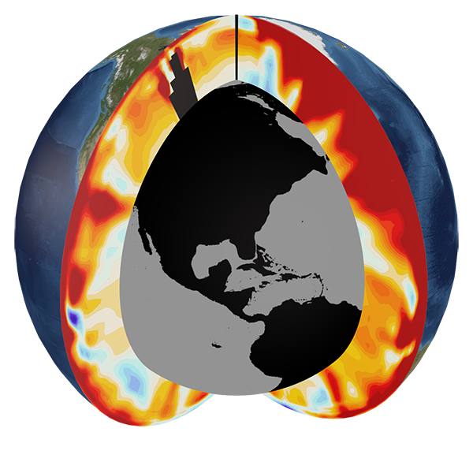

Industrial-era global ocean heat uptake doubles in recent decades
This page has been created in support of "Industrial-era global ocean heat uptake doubles
in recent decades" by Peter J. Gleckler, Paul J. Durack, Ronald J. Stouffer,
Gregory C. Johnson and Chris E. Forest - published in Nature Climate Change 18th January
2016. DOI: 10.1038/nclimate2915
ALL MATERIAL IS EMBARGOED WITH NATURE CLIMATE CHANGE AND IS NOT FOR RELEASE UNTIL 11AM U.S.
EASTERN TIME, MONDAY 18th JANUARY 2016.
To support this publication a media release and some additional FAQs are being provided for media use.
The following images are available in support of the Gleckler et al. (2016) publication.
Please use the source acknowledgements as noted for each figure caption.
Figure 1. Simulated and observed industrial-era changes in global ocean heat
content (OHC; 1022 J) for three depth ranges (0-700 m, 700-2000 m
and > 2000 m). Model-only results (CMIP5 Multi-model Mean [MMM]; thick solid
black and grey lines) are shown in a for all three depth layers,
whereas the CMIP5 MMM and observations (thick colour lines; see legend) are
shown for the individual layers (0-700 m, 700-2000m and >2000 m), respectively
in b-d. The CMIP5 MMM 0-700 m and 700-2000 m results are further
compared in insets e and f, and include three Argo-only
estimates, with all observational results set to the MMM value in the year
2006 for comparison. An adjusted version ('Volc adj.'; see main text Methods)
of the 0-700 m MMM result (thin black line) is shown in a, b and e
to provide a simple measure of the impact of missing twenty-first-century
volcanic forcing in the CMIP5 simulations. The CMIP5 MMM is obtained from
Historical simulations and extended to 2015 using the RCP8.5 future
projection simulations starting in 2005. CMIP5 Historical MMM time series
are set to zero at 1865. For observations, the upper (0-700 m)
and intermediate (700-2000 m) estimates are set to equal the MMM in 1971,
and the deep estimates originates from the 1992 CMIP5 MMM deep value; Source: Peter
Gleckler/LLNL
- Clicking
HERE will download an archive containing a high-resolution *.tif and *.eps
file suitable for print
Figure 4. Ocean heat update (percentage of total 1865-2015 change) for the
CMIP5 MMM upper (0-700 m; turquoise), intermediate (700-2000 m; light blue)
and deep (>2000 m; dark blue) layers. The three shaded wedges are combined
similarly to the AR5 change in global energy inventory (Rhein et al., 2013;
Box 3.1, Fig.1). The thick vertical grey bar represents a +/- 1 S.D. spread
from 14 CMIP5 simulations about the year (1997) at which the MMM heat uptake
reaches 50% of the net industrial-era (1865-2015) increase, and the thick
horizontal grey bar indicates the CMIP5 +/- 1 S.D. spread in the year at
which 50% of the total accumulated heat is reached. Black (forcing included)
and grey (forcing excluded) triangles represent major twentieth- and twenty-first-century
volcanic eruptions with magnitude represented by triangle size
(see Supplementary Information); Source: Peter Gleckler/LLNL
- Clicking
HERE will download an archive containing a high-resolution *.tif and *.eps
file suitable for print

Figure M1. Pacific and Atlantic meridional sections showing upper-ocean warming
for the most recent complete decade. Red colors indicate a warming (positive)
anomaly and blue colors indicate a cooling (negative) anomaly.
(Source: Timo Bremer/LLNL) - Clicking
HERE will download a high-resolution *.tif file suitable for print.

Figure M2. Pacific and Atlantic meridional sections showing upper-ocean warming
for the past 6 decades (1955-2011). Red colors indicate a warming (positive)
anomaly and blue colors indicate a cooling (negative) anomaly.
(Source: Timo Bremer/LLNL) - Clicking
HERE will download a high-resolution *.tif file suitable for print.

Photo 1. The Southern Ocean is a remote and beautiful place. Icebergs frequently
drift off the Antarctic coast and are beautiful to see during their various stages
of melting. This iceberg, sighted off the Amery Ice Shelf, also has bands of
translucent blue ice formed by sea or freshwater freezing in bands between layers
of more compressed and white glacial ice (Source: Andrew Meijers/BAS)
- Clicking
HERE will download a high-resolution *.tif file suitable for print.

Photo 2. Akin to having a fleet of miniature research vessels, the global flotilla
of more than 3,600 robotic profiling floats provides crucial information on upper
layers of the world's ocean currents. (Source: Alicia Navidad/CSIRO) - Clicking
HERE
will download a high-resolution *.tif file suitable for print.
Photo 3. Lined with bottles triggered at different levels of the ocean, this
conductivity, temperature and depth profiler bearing a suite of sampling
bottles is a mainstay of oceanography. It can be deployed to depths of 6,000
metres to study changes in ocean temperature and salinity.
(Source: Andrew Meijers/BAS) - Clicking
HERE will download a high-resolution *.tif file suitable for print.
Photo 4. Lined with bottles triggered at different levels of the ocean, this
conductivity, temperature and depth profiler bearing a suite of sampling
bottles is a mainstay of oceanography. It can be deployed to depths of 6,000
metres to study changes in ocean temperature and salinity.
(Source: Andrew Meijers/BAS) - Clicking
HERE will download a high-resolution *.tif file suitable for print.
Photo 5. Lined with bottles triggered at different levels of the ocean, this
conductivity, temperature and depth profiler bearing a suite of sampling
bottles is a mainstay of oceanography. It can be deployed to depths of 6,000
metres to study changes in ocean temperature and salinity.
(Source: Andrew Meijers/BAS) - Clicking
HERE will download a high-resolution *.tif file suitable for print.

Photo 6. Lined with bottles triggered at different levels of
the ocean, this conductivity, temperature and depth profiler bearing a
suite of sampling bottles is a mainstay of oceanography. It can be
deployed to depths of 6,000 metres to study changes in ocean temperature
and salinity. (Source: Ann Thresher/CSIRO) - Clicking
HERE will download a high-resolution *.tif file suitable for print.

Photo 7. Monitoring of the Southern Ocean using arrays of
anchored and drifting instruments reveals warming and freshening of
deep waters around Antarctica. Some of the extra melting of ice around the edge of
Antarctica is flowing into the sea and getting carried down to the deep
ocean by ocean currents. (Source: Steve Rintoul/CSIRO) - Clicking
HERE will download a high-resolution *.tif file suitable for print.
Photo 8. Lined with bottles triggered at different levels of the ocean, this conductivity,
temperature and depth profiler bearing a suite of sampling bottles is a mainstay of
oceanography. It can be deployed to depths of 6,000 metres to study changes in ocean
temperature and salinity. (Source: Andrew Meijers/BAS)
- Clicking HERE
will download a high-resolution *.tif file suitable for print.
Photo 9. Monitoring of the Southern Ocean using arrays of anchored and drifting
instruments reveals freshening of deep waters around Antarctica. Some of the
extra melting of ice around the edge of Antarctica is flowing into the sea
and getting carried down to the deep ocean by ocean currents. (Source: Steve
Rintoul/CSIRO)
- Clicking HERE
will download a high-resolution *.tif file suitable for print.